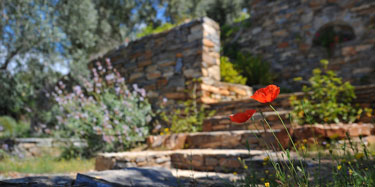

Services
Buildings

Dust to Stone Construction specializes in building a wide range of structures and buildings. From residential homes to commercial buildings, we have the expertise to bring your vision to life. Whether you're looking for a modern and sleek design or a more traditional and timeless look, our team of skilled professionals will work closely with you to create the perfect space. With a focus on quality craftsmanship and attention to detail, Dust to Stone Construction is committed to delivering exceptional results that exceed your expectations.
Landscaping
Dust to Stone Construction specializes in a wide range of landscaping projects to transform outdoor spaces into stunning havens. From designing and installing beautiful gardens to constructing intricate pathways and patios, our skilled team brings creativity and expertise to every project. Whether it's creating a tranquil water feature or building a custom outdoor kitchen, Dust to Stone Construction ensures exceptional craftsmanship and attention to detail. With our commitment to customer satisfaction, we work closely with clients to bring their landscaping visions to life, making outdoor dreams a reality.